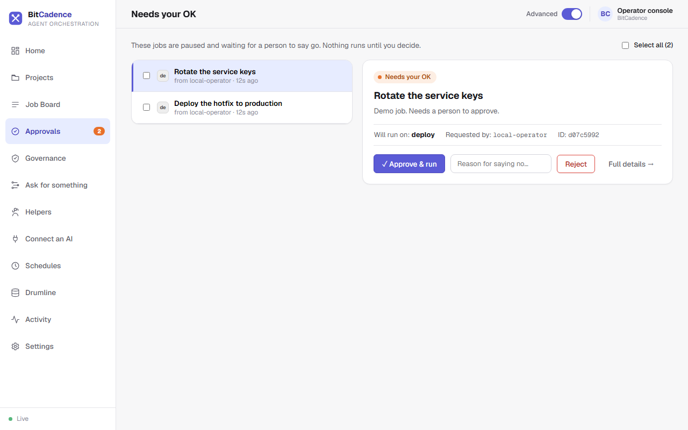
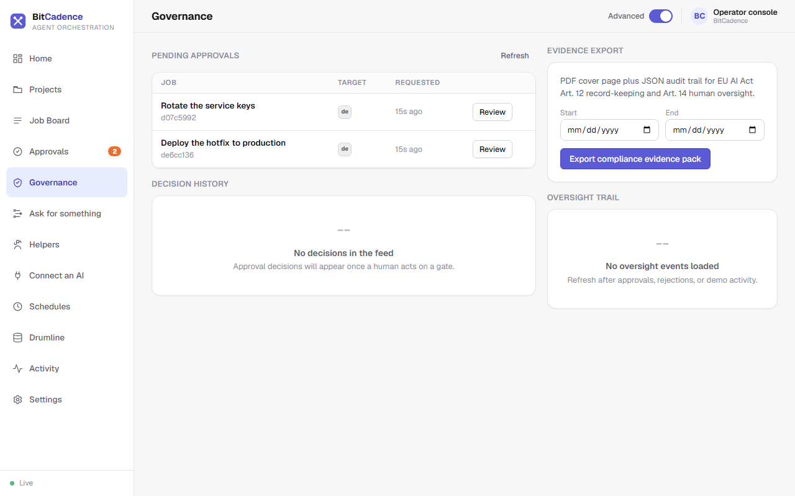

Approvals & Governance
Goal
Implement human-in-the-loop oversight, authorize or reject high-risk helper operations at safety gates, trigger the emergency kill switch, and export tamper-evident audit evidence packs.
Step-by-Step Instructions
1. Open Approvals
Click Approvals in the left menu. The badge next to it shows how many jobs are paused at an approval gate.

2. Review a paused job
Pick a job from the list on the left. The panel on the right shows:
- Title and description: what the helper wants to do.
- Will run on: which helper role would do the work if you say yes.
- Requested by: who asked for it.
- Full details: opens the job with its history.
3. Make a decision
- To say yes: click Approve & run. The job moves from
needs_approvaltopending, a helper can pick it up, and the audit log records who approved it. - To say no: type a reason in Reason for saying no and click Reject. The job becomes
rejectedand no helper will touch it. - To handle several at once, tick their boxes or use Select all.
The same Approve button also appears on Home under What needs you. See Approvals for how the console checks that you are allowed to approve.
4. Pause everything (kill switch)
When something unexpected is happening:
- Click Settings, and in the Pause everything card click Pause.
- Helpers stop taking new work and no new jobs are started.
- Jobs already in progress finish; you can still look, approve and reject.
- Click Resume on the same card to start again.
See Settings. The MCO_KILL_SWITCH setting is the same switch.
5. Governance page and evidence export
Click Governance for the pending approvals, the decision history and the oversight trail in one place.

To export evidence, pick a Start and End date and click Export compliance evidence pack. You get a PDF cover page plus a JSON audit trail for EU AI Act Art. 12 record-keeping and Art. 14 human oversight.
The CLI Equivalent
# Approve a job at the human gate
mco approve <job-id>
# Reject a job with recorded rationale
mco reject <job-id> --reason "Production deployment window closed"
# View tamper-evident event history
mco audit <job-id>
# Export a signed cryptographic audit checkpoint
mco audit-checkpoint <job-id> checkpoint.json
# Enable emergency kill switch from terminal
mco settings MCO_KILL_SWITCH true
mco restart
What You'll See
- Immutable History: In the database (
agent_job_events), every approval decision is written to an append-only table. Any databaseUPDATEorDELETEquery on this table is rejected at the storage engine level. - Audit Receipt: In the job's details, the history explicitly stamps:
approved · actor: local-operator (role: admin) · 2026-10-03 12:25:00 UTC
If It Goes Wrong
1. "403 Forbidden: Approver role required"
- Cause: The bearer token used to approve the job belongs to a role that is not listed in
MCO_APPROVER_ROLES. - Fix: By default, approver roles are
human,admin,operator. Re-authenticate with an admin or human token, or configure:mco settings MCO_APPROVER_ROLES "human,admin,operator,reviewer"
2. "Kill switch active: Cannot lease task"
- Cause: The kill switch was left enabled (
MCO_KILL_SWITCH=true). - Fix: On Settings, click Resume in the Pause everything card, or run:
mco settings MCO_KILL_SWITCH false